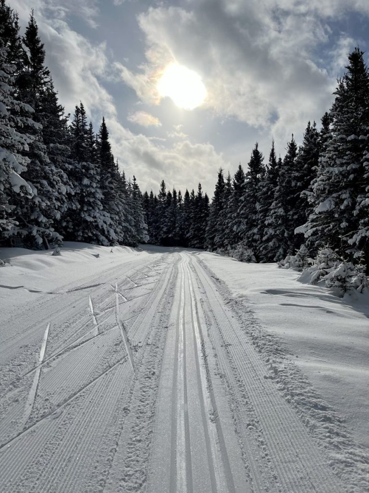
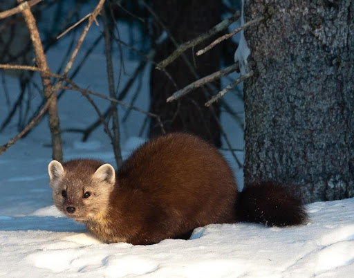
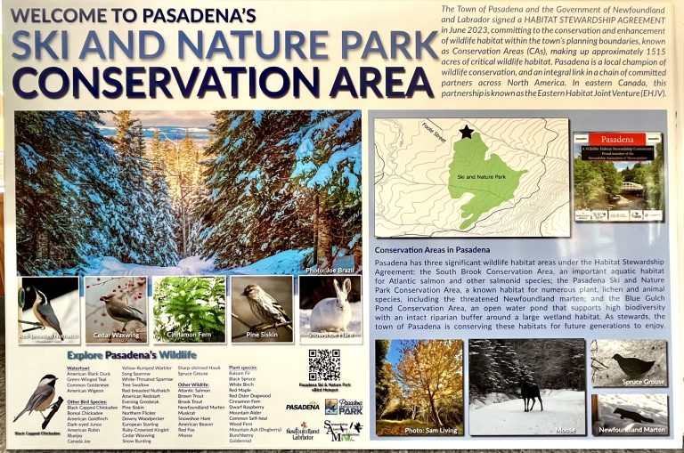

About Pasadena Ski & Nature Park
50 years of trails, community, and conservation in the Humber Valley.
The club's origins go back 50 years. It has evolved to an active club of ~180 members. We are a volunteer based, nonprofit organization. Support comes from club memberships, visitor passes, and fundraising in the community.
The mission of the Club is to promote healthy, active living through Nordic skiing, snowshoeing, hiking, and cycling (non-motorized).


A hotspot for wildlife
The park is a hotspot for many species of birds and animals. Sightings include pine marten, lynx, fox, black bear, snowshoe hare, caribou, moose and coyote.
Visit eBird for more information on the 71 bird species recorded in the park.
You can enjoy the park throughout the year. When the snow disappears and spring arrives, the brooks and bogs come alive. Nature puts on a different, but amazing show. Whether on foot or bicycle, an adventure awaits.
Habitat Stewardship

In June 2023, the Town of Pasadena and the Government of Newfoundland and Labrador signed a Habitat Stewardship Agreement committing to the conservation and enhancement of wildlife habitat.
Pasadena Ski and Nature Park is one of three significant wildlife habitat areas under the agreement. The park is a known habitat for numerous plant, lichen and animal species. Check out the Nature Series to learn more about the park in all seasons. A network of owl nest boxes provide potential nesting sites for two small owls – the boreal and the northern saw-whet.